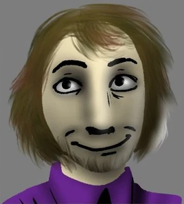

Brian Stells used to work on books and games for low amounts of money, but decided to find a higher paying job and began working at Bunny Smiles Incorporated(BSI). By 1982, Brian was ready to be a K-9 Facility Caretaker.
...